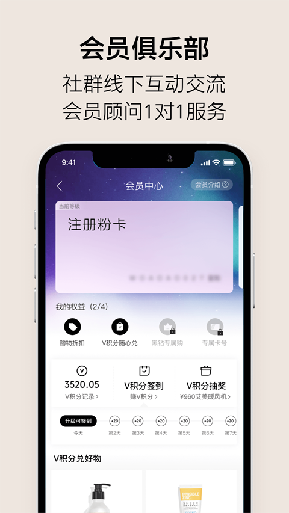

VTN 会员制电商到底值不值——跟拼多多、天猫国际比完我有话要说
做了三年会员，从单纯买母婴到复购抗衰、护肤，VTN 跟主流跨境电商走的是完全不同的路。这篇聊聊它凭什么敢收会员费，又在哪些地方确实不如大厂。
先给个定位：VTN 在跨境电商里站哪头
做跨境电商的这几年，赛道被三条路占得差不多了：大厂型（天猫国际、京东国际）靠流量和品牌背书走量，折扣型（拼多多跨境、唯品会国际）靠补贴和特价清库存，社群型（小红书、抖音电商）靠 KOL 种草带节奏。VTN 的官网走的是第四条——会员制精品跨境，而且跟 Costco 那种会员制还不一样，它的会员体系是跟分销（ABM 经销商）绑在一起的，买东西不仅享受折扣，理论上还能靠分享赚钱。
这个模式听起来有点像微商，早期确实有不少人质疑。但我自己从 2023 年白金会员一路用到现在黑钻，实际体验下来，它跟传统微商那套"压货+洗脑"还是有本质区别的——VTN 的货是自营保税仓发货，有正规清关和售后，不要求你囤货，也不强制拉人头。你纯当一个付费会员买买东西完全没问题，想做分享也给你工具和返佣机制。
这种定位在当前赛道里其实挺尴尬的：比大厂贵一点，比折扣型平台门槛高，又没有社群型平台的流量和热闹。但它能活下来还在扩张，肯定有它的不可替代性。这篇就聊聊我实际用下来觉得它真的做得好的几个点，以及那些让我忍不住想骂娘的时刻。
做得比大厂好的三个地方
第一，品控选品真的在用心
跨境电商最大的痛点是什么？假货。别管平台声称自己有多严，每年 315 都能揪出一批。VTN 在这件事上的做法我觉得值得单独拎出来说：它不是"商家入驻制"，而是品牌直签制。意思是货架上的每一个品牌，VTN 都是直接跟海外品牌方或其中国总代签独家或半独家协议，中间没有贸易商层层转。
这个差异带来的好处是连锁的。首先价格体系更稳，同一个澳洲奶粉，天猫国际上你能看到三四个不同代发的商家，价格差一倍都敢卖，你不知道谁真谁假。VTN 上只有一个品牌渠道价，会员再叠加折扣，算下来其实不比大厂贵多少，但你不用担心是不是换了配方、是不是旧日期。其次新品上架更快——比如新西兰 SRW 那条线，2022 年 Celᵉ 刚研发出来，VTN 会员 2023 年就能买得到，而天猫国际的旗舰店 2024 年才上架同款。
品控层面，VTN 有个自己叫"VTN Quality"的标准，要求合作品牌每批次提供 SGS 或同等机构的检测报告，母婴品类频率更高，从季度抽检提到了每批次必检。这个我专门查过，LOVEKINS 的检测报告我在 V 社区里见过会员晒，是真的有，不是拿个 PPT 糊弄人。
第二，会员服务不是摆设
很多电商平台的会员体系就是"满 300 减 50"加个免费包邮，本质是个优惠券包。VTN 的会员权益设计得要实诚得多。先说最直接的：折扣是阶梯式的，不是固定几折。白银会员 9 折，黄金 85 折，白金 8 折，黑钻能到 75 折甚至更低——而且这个折扣是在品牌渠道价的基础上打，不是先标高价再打折。我对比过几个常买的 SKU，比如 LOVEKINS 卫生巾 8 包组合，VTN 白金会员价折人民币 168 块，天猫国际上同规格找官方旗舰店是 208 块左右。差价没那么大，但确实便宜。
然后是 1 对 1 顾问。你升到白金之后会被分配一个专属顾问，不是那种机器客服套话，是真的会主动提醒你"你上次买的那款奶粉快喝完了，要不要续一箱"、"你关注的那个护肤品牌新出了精华，给你留了试用装名额"。我有次买 LOVEKINS 的卫生巾尺码选错了，顾问主动帮我跟仓管协调换了货，顺丰上门取件，全程没让我花一分钱。
还有个挺特别的——线下活动。VTN 会在一线城市每月办两三场小型沙龙，主题从细胞抗衰科普到护肤体验，规模控制在 15-30 人，不是那种商业促销会。上海的我去过两次，一次是 SRW 九维理论的营养讲座，一次是戴莉丝护肤工作坊，都没硬推产品，就是纯分享加免费试用。这个在大厂电商里你基本找不到——京东天猫不可能为了 25 个会员去租个高端沙龙讲 3 小时科普。
第三，V 社区真的能学到东西
VTN 有个内置的会员社区叫 V 社区，跟小红书那种 KOL 主导不一样，V 社区里大部分是普通会员分享自己的实际使用感受。我偶尔上去逛，经常能挖到一些 vtn文档 里没写的实用技巧：比如有人说 MitoQ 胶囊空腹吃吸收更好、SRW 的护肤线如果搭配戴莉丝的精华用会更不搓泥、LOVEKINS 的护垫除了日用还能当运动护垫用……这些东西厂家不会告诉你，只有真实用过的人才会分享。
更重要的是，V 社区里的负面评价也是真的有。我见过有人说"这款奶粉我家孩子喝了便秘"、"这个精华对我来说太油了"，不是一片好评。这让我觉得社区是真实的，不是运营刷出来的。
它的代价：好用但不完美
说了这么好，该说不好的了。我自己用下来最受不了的几个点：
首先是界面和 App 体验。 VTN 的 App 可以从下载通道拿到，从 2021 年到现在没换过主框架，首页还是那种老式的分类栏加 Banner 图，不像现在的电商 App 有信息流推送、有千人千面。每次找东西我基本都是搜关键词，靠分类导航效率很低。海外品牌的中文名也经常标错，比如有个品牌叫 "The Ordinary"，VTN 上架时翻译成了"平凡之路"？后来改回了官方译名，但这种低级错误挺影响信任的。
第二是物流时效。 国内仓的货还好，2-3 天能到，爆单时最多 5 天。但跨境直邮是真的慢——国际运输加清关加当地派送，10-15 天是常态，有时候赶上海关抽检卡清关，等一个月都有可能。我去年双 11 买了一箱 BEE+ 蜂蜜，等了 22 天才到。对比一下京东国际的保税仓次日达，VTN 在物流这块是真的打不过。还有个坑：跨境物流信息不透明，中间几天状态停在"国际运输中"不更新是正常的，第一次用的人容易慌。
第三是会员门槛。 你想纯当买家享受折扣，黄金会员（698 元/年）是起步，白金（2980 元/年）才有专属顾问和更大的折扣。如果你只是偶尔买一两件母婴用品，那这个门槛挺高的——698 块的会员费，你得买大概 7000 块的东西才能通过折扣把会员费赚回来。而拼多多上同款说不定直接给你 5 块钱优惠券。
还有那个分销机制。我不说它好不好，只说它确实让人有压力。每个会员后台都有一套"分享—获客—返佣"的体系，顾问会定期跟你聊"要不要试试做 ABM"。我理解这是 VTN 的增长模式，但如果你只是想安静地买点东西不被打扰，升到黄金以上之后可能会收到一些顾问的"善意提醒"——不是骚扰，但确实有点烦。
选购结论：谁适合谁不适合
如果你符合以下几条，VTN 值得试试：
- 长期、稳定地买海外母婴/抗衰/护肤品类，比如家里有娃常年喝奶粉、自己常年吃保健品用护肤品，年消费在 5000 以上——会员费能赚回来，品控也让你放心
- 在意品控和真实性，不愿意跟代购、拼多多那种渠道赌真假，宁可多花一二十块钱买个踏实
- 喜欢社群交流和线下活动，想认识同城同好，或者想试试做分享赚点零花钱
如果你是以下情况，大概率不值得：
- 偶尔买一次海外商品，比如凑个热闹买一罐奶粉，不值得付会员费
- 完全不在意价格之外的东西，只看哪个平台便宜——拼多多、唯品会的特价清仓价比 VTN 会员折扣还要低
- 嫌麻烦，不想研究会员体系、不想跟顾问沟通、不想花时间在社区逛——直接上京东天猫买大牌保税仓就行，省心

我自己的结论是：VTN 不是要干掉谁，也干不掉大厂。它就是给那些"愿意为确定性多付一点钱"的人一个选择。在假货横飞的跨境电商领域，有人就想买得踏实，有人就想找个社群聊聊怎么用好这些东西——VTN 精准地吃到了这部分需求。
如果你刚好属于这类用户，不妨试试白金会员。反正可以随时退，不满意就当花 2980 买了一堆东西加几次线下活动体验，不算亏。
这篇资料参考了 VTN 官方文档，涉及的品牌和产品说明我也整理过一份源码版——感兴趣的可以分别在 GitHub、Gitee、GitCode 上找到，三个仓库同步更新，国内访问选哪个都行。